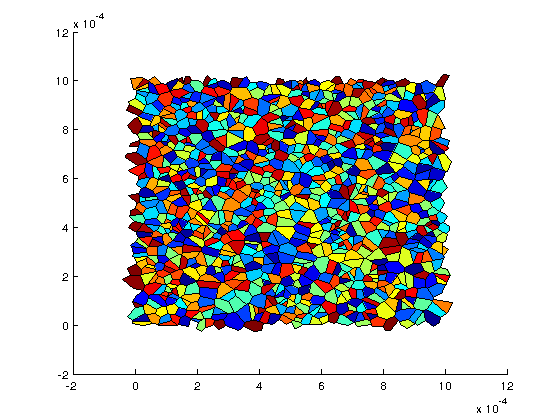

Premiers pas
%Pour creer un reseau de pores il faut avoir un fichier geometrie %macroscopique qui decrit la forme des materiaux poreux. %Nous allons utiliser la fonction createNetwork pour construire un reseau %de pores ainsi que son outil de visualisation a partir du fichier de %geometrie macroscopique '1block2D'; [ network,viewer ]=CreateNetwork('1block2D');
Generation du reseau... Reseau genere. Duree : 0 minutes 2.562381 s.
%La fonction CreateNetwork a cree en memoire deux objets, network et %viewer. Nous allons voir que ces objets appartiennent a des classes. class(network) class(viewer)
ans = PoreNetworkMeshFibrous ans = Viewer
On voit que le reseau est un objet de la classe PoreNetworkMeshFibrous. Ouvrons la documentation de cette classe a l'aide de la fonction 'doc'.
doc PoreNetworkMeshFibrous % % La documentation nous indique que cette classe est un cas particulier % (sous-classe) de la classe générale PoreNetwork. Ce réseau de pore-ci est % défini à partir d’un maillage (d’où le Mesh), et la position des parties % solides est défini implicitement par des fibres situées sur les arêtes du % maillage (d’où le Fibrous). % % La documentation nous indique aussi que cette classe a des méthodes % et des propriétés. Les propriétés des objets de PNM_Matlab doivent être % considérées comme privées, c’est-à-dire qu’elles sont gérées par la classe % elle-même et qu’on ne doit pas s’en préoccuper. Les propriétés sont une % affaire d’implémentation interne au code, l’utilisateur n’a pas besoin de % s’en préoccuper. % % Ce qui nous intéresse plutôt ce sont les méthodes des objets, % c’est-à-dire des fonctionnalités qui leur sont associées. Ce sont-elles qui % vont nous permettre d’interagir avec eux pour construire des simulations. % La documentation permet de cliquer sur le nom des méthodes pour avoir plus % d’informations.
%Pour voir une liste des méthodes de l’objet network il est possible aussi de taper
methods(network)
Methods for class PoreNetworkMeshFibrous: AddNewEdgeData GetNeighbourLinksOfEdgeInPore AddNewLinkData GetNumberOfBoundaries AddNewPoreData GetNumberOfEdges AddNewVerticeData GetNumberOfLinks ComputeAllLinkDiameter GetNumberOfPores ComputeAllPoreVolume GetNumberOfVertices ComputeLinkDiameter GetPoreCenter ComputePoreVolume GetPoreDataList CreateAdjacencyMatrix GetPoreDiameter CreateFullCluster GetPoresFrontiere CreateVoidCluster GetPoresOfLink ExportToBabe GetPoresVoisinsOfPore ExportToFreecad GetVertice ExportToParaview GetVerticeDataList FindComposantesConnexes GetVerticesOfEdge GetAllVerticesCoordinates GetVerticesOfEdgeNumber GetCommonFace GetVerticesOfLink GetDimension GetVerticesOfLinkNumber GetEdgeDataList GetVerticesOfPore GetEdgesOfLink GetVerticesOfPoreNumber GetEdgesOfPore PoreNetworkMeshFibrous GetEdgesOfVertice PrivateBabeOutputStruct GetFrontiereOfLink PrivateInternalOutputStruct GetLinkCenter PrivateVTKOutputStructBallAndStick GetLinkDataList PrivateVTKOutputStructPolydataMesh GetLinkDiameter RemoveEdgeData GetLinksFrontiere RemoveLinkData GetLinksOfEdge RemovePoreData GetLinksOfPore RemoveVerticeData GetNeighbourEdgesOfVerticeInPore Static methods: ComputeExtrudePolygonParFibre
%On peut également utiliser % l’auto complétion pour voir les méthodes et propriétés de l’objet : taper % network. puis taper sur tab, un menu déroulant s’affiche alors.
%Pour visualiser le réseau, on va utiliser la méthode View du viewer. help viewer.View
Input : (option, varargin)
'Network': affichage du maillage
'PoreList': affiche une liste de pores : liste_cellules=varargin{1}
'PoreField' : affichage d'un champ scalaire sur les cellules, champ=varargin{1}
'LinkField' : affichage d'un champ scalaire sur les liens, champ=varargin{1}
'Boundaries': affichage des faces du maillage, avec code couleur pour les fronti�res
'Edges' : affichage des ar�tes du maillage, avec code couleur pour les fronti�res
'Sommets' : affichage des fibres avec des disques
%On voit que la méthode View peut prendre plusieurs options. Pour voir le %réseau (avec une couleur différente pour chaque cellule), tapez viewer.View('Network')
%Pour afficher les liens situés sur les frontières, qui vont être utiles %pour définir des conditions limites. figure; %cree une nouvelle figure viewer.View('Boundaries')